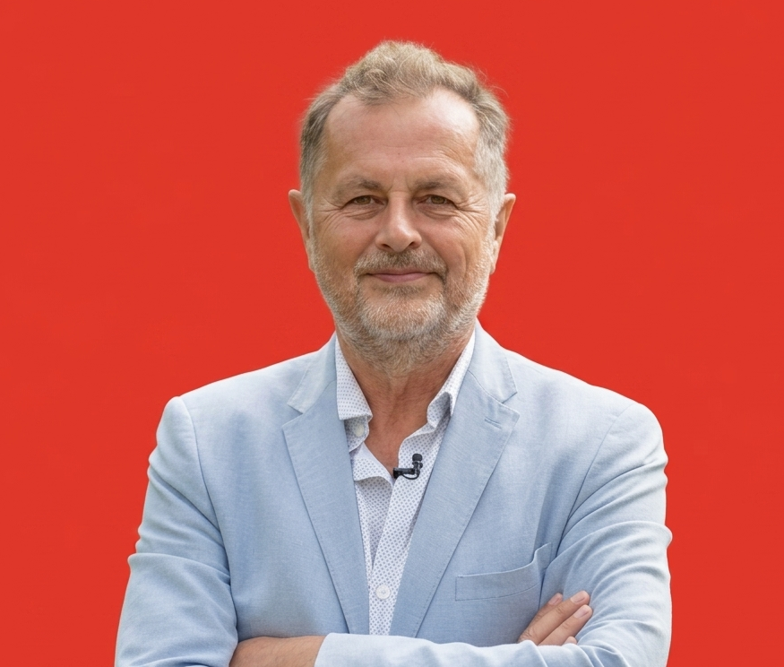
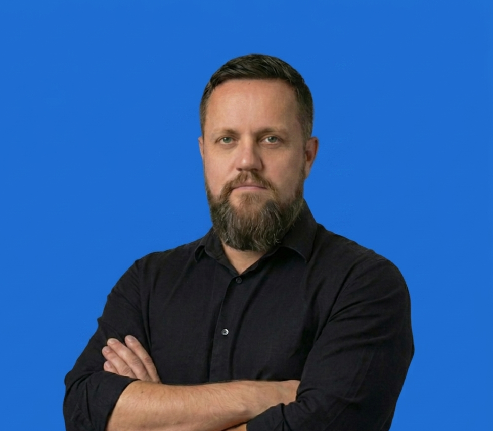

01
Osnivač & autor
Rene Bakalović
Kuhar hobist · Gastronomad · Dobri duh scene
Rene Bakalović je osoba koja povezuje kvalitetne ljude. Obožava Marka Twaina koji je rekao kako je novinar osoba koja o svemu zna po ništa. Srećom Rene pozna ljude koji o hrani i piću svašta pametno imaju za reći. Pa ih pita.
Sviđaju mu se ljudi poput njemačkih nutricionista koji su ustvrdili kako je užitak u jelu bitan sastojak zdrave hrane. Ili francuskih eksperata koji su pokrenuli državnu akciju "Vrhunskim vinom protiv alkoholizma".
Više mu se sviđa potraga za dobrim od zdvajanja nad lošim.
- Suvoditelj — Kuhinja Kod Ane
- Suvoditelj — Gastronomad
- Suautor — Tri Trilje
- Autor — Dobra Hrana
Instagram & TikTok — uskoro

02
Millennial View · Kolumnist
Vlado Stipan
F&B veteran · AI specialist · Konzultant
Vlado Stipan imao je sreću kroz 20 godina staža raditi s nekim od najboljih kuhara, konobara i općenito restoranskih đetanika u regiji. I možemo reći da mu najbolje od svega ide krađa znanja od pametnijih i sposobnijih kad god se ukazala prilika.
Ne vjeruje u guru-e. Vjeruje u ljude koji znaju zašto rade što rade — i koji to znaju objasniti bez PowerPointa.
U međuvremenu se uhvatio za tehnologiju. Ne zato što je to trend, nego zato što je vidio što se dogodi kad restoran radi s podacima umjesto s osjećajem. Razlika je brutalna.
Millennial View kolumna pisati će o tehnološkim inovacijama i implementaciji AI rješenja u stvarna F&B poslovanja. Naglasak će biti na onome što već radi negdje — a moglo bi raditi i ovdje.
- 20 godina F&B managementa
- Vlasnik restorana · Multinacionalni lanci
- 6 godina — F&B konzultant
- AI implementacija za SME — od 2022.